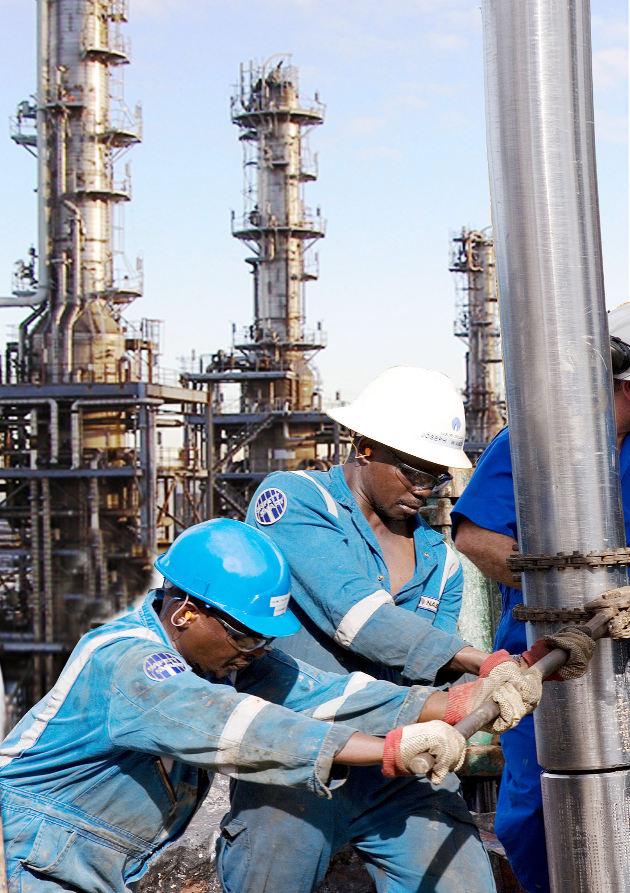
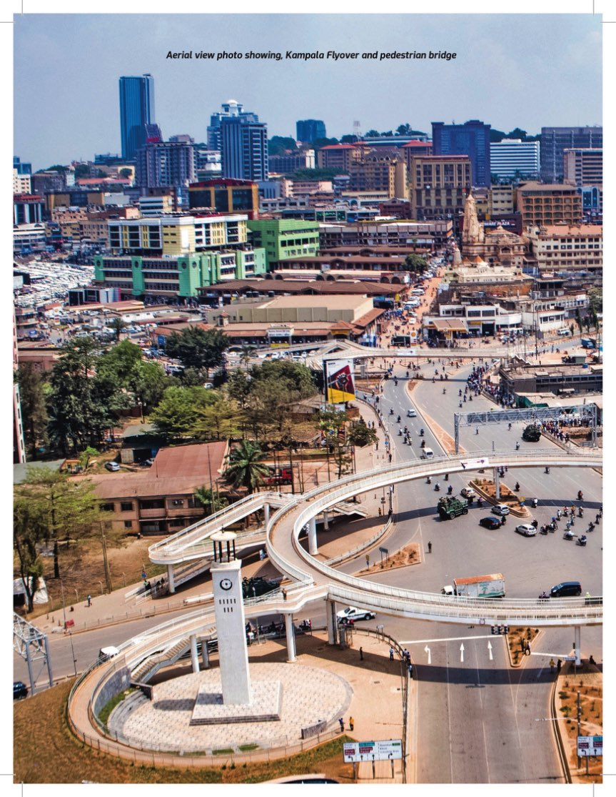

Media & source archive
The visual library behind the development framework.
Every embedded image extracted from the three supplied policy PDFs is included in this website package. The page loads optimised thumbnails first and opens the source image on demand.



Full PDF image archive